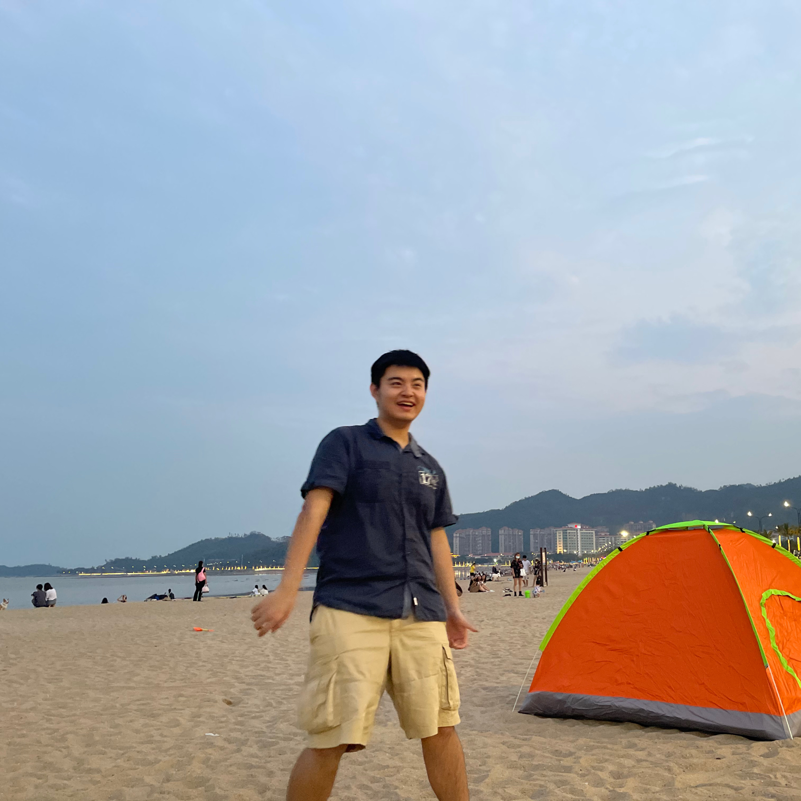

- Phebe Tianfei Bi
-

Hi guys! My name is Phebe Tianfei Bi.
I am a sophomore (rising Junior) student that pursuing a major in informatics with track of Information Assurance and Cybersecurity.
- Haonan Zheng
-

Hello everyone! My name is Haonan Zheng.
I am a rising junior student in University of Washington. I am majoring in Geography and applying to informatics.
- Sylvia Muan Li
-

I’m Sylvia Li and I’m from 2024 class of UW.
I love traveling, shopping and listening to musics. As an international student, I was nervous when I first came to the campus. Housing is one of the most important issue to think about. I hope this website can provide more and more students like me with real and useful information shared by others.
- Wendy Huang
-

Hi, this is Wendy, I’m a rising senior majoring in informatics and Economics.
I lived in an apartment at U-District and I found it’ not easy to get very apartment’s information organized and decide to settle down for a place that can make you comfortable. So hopefully this website can help you search, filter, and compare every choices!